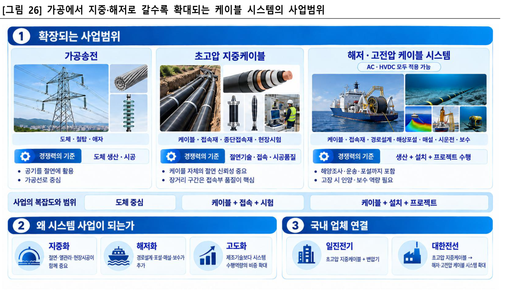
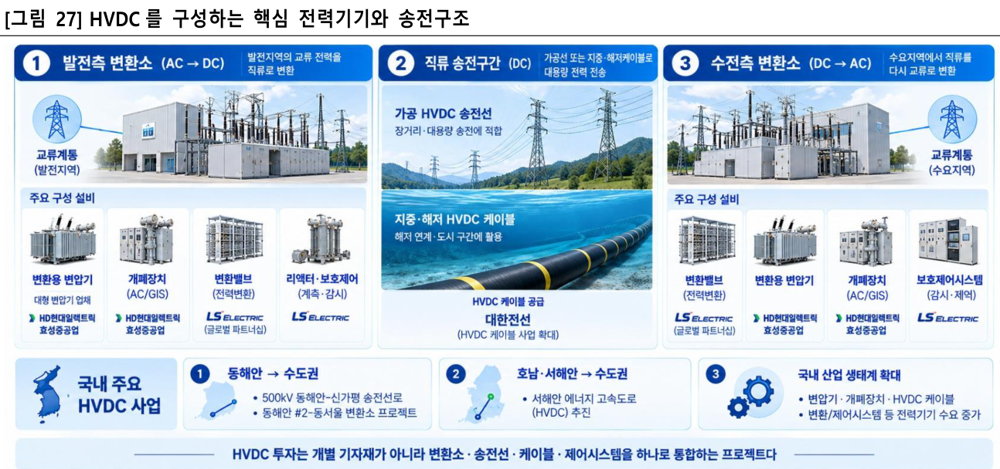

전선과 HVDC — 병목은 «케이블+접속+포설선+변환소» 묶음, 국내 업체 초고압 발주는 2027~2028년이 본게임
한눈에 보기
결론
- 전력망 병목이 발전에서 송전으로 옮겨감 → 지중·해저·HVDC로 갈수록 전선은 단품이 아니라 «제조+접속재+포설+시험» 시스템 사업 (핀릿, 2026-09-21)
- 공급 문턱: 525kV급 HVDC 케이블 상용화 5개사, 고압 포설선(CLV) 약 20척 → 유럽 3사 수주잔고가 매출 4~6년치 (교보, 2026-03-17)
- 한국 서해안 HVDC 해저케이블 발주는 «2026년 내»에서 «2027년 1분기»로 밀림, 미국은 BAAJA가 상원 절차 통과 중 → 국내 업체 초고압·해저 수주 가속 시점은 2027~2028년이라는 게 공통 시각 (KB, 2026-08-31; 유안타, 2026-06-11; DS, 2026-11-10)
| 지표 | 값 | 기준 | 출처 |
|---|---|---|---|
| LME 전기동($/t) | 13,399 | 11/17, 1년 +24.3% | (LS증권, 11-17) |
| HVDC 케이블 시장(십억$) | 12.4 → 38.6 | 2025 → 2030, 판독 | (한화, 08-03) |
| 서해안 해저 HVDC 사업비 | 약 11조원 | 8GW·1,070km | (키움, 08-25; DS, 11-10) |
| 유럽 3사 수주잔고 | 약 €34B | 4Q25, 매출 4~6년치 | (교보, 03-17) |
| 고압 해저 포설선(CLV) | 약 20척 | 신조 7척 | (교보, 03-17) |
HVDC 케이블 시장은 Grand View Research 막대그래프를 읽은 근사치. 유럽 3사 = Prysmian·NKT·Nexans
flowchart LR D["전방 수요<br/>AI 데이터센터·재생에너지<br/>노후망 교체·전기화"] --> B["송전 병목<br/>신규선 7~15년<br/>계통 대기 2,500GW+"] B --> H1["765kV 교류 가공선<br/>장거리 AC 백본"] B --> H2["초고압 지중케이블<br/>도심·데이터센터 인입"] B --> H3["HVDC 육상·해저<br/>장거리·해상풍력·연계선"] H2 --> S["공급 묶음<br/>케이블·접속재·시험<br/>포설선·시공"] H3 --> S H3 --> C["변환소<br/>변환용 변압기·밸브·제어"] M["원가<br/>구리 도체·XLPE 절연<br/>나프타 기반 소재"] -.-> P["판가 연동<br/>LME 전가 + 믹스"] S --> P
구성: 핀릿(2026-09-21) 병목·시스템 사업 구조, 한화(2026-08-03) 765kV·HVDC 역할 구분, 하나(2026-04-16·05-14) 나프타 기반 절연 소재 차질을 엮음
- 원천 범위: 1년치 320건 중 전선 전용 산업 리포트는 거의 없음 → 전력기기·유틸리티·풍력 리포트 속 전선·HVDC 단락과 전선 기업 리포트(사례)에서 산업 사실만 추림
- 2025년 발간분 5건에는 전선 내용이 없음 → 2025년 기준선은 2026년 리포트 속 과거값(분기 구리 가격, 2025년 말 잔고)으로만 확인
- 관련 노트: 00_에너지_index · 01_에너지_용어집 · 02_에너지_전력수요 · 03_에너지_전력기기 · 07_에너지_신재생과ESS · 08_에너지_전력시장과요금 · 09_에너지_시장규모모델 · 10_에너지_하우스시각_변경이력 · 11_에너지_트래킹캘린더
① 기초: 전선의 층위와 HVDC
요약
- 전선은 전압·설치 방식에 따라 경쟁 기준이 다름: 배전은 가격·유통, 초고압 지중은 절연·접속, 해저·HVDC는 생산+포설+프로젝트 수행
- HVDC는 «설치 방식»이 아니라 «송전 방식» → 가공선·지중·해저 어디에나 적용, 양 끝에 변환소가 붙음
품목 층위
| 층위 | 대표 전압·형태 | 경쟁 기준 | 대표 수요처 |
|---|---|---|---|
| 배전·산업전선 | MV/LV, MV-105 | 가격·유통망·인증 | 데이터센터·태양광 URD |
| 버스덕트 | 구리·알루미늄 도체 | 빅테크 직납·설계 | AI 데이터센터 서버랙 |
| 가공 송전선 | ACSR·증용량 도체 | 도체 생산·시공 | 장거리 교류·재도체화 |
| 초고압 지중 | 110~500kV | 절연·접속재·시공품질 | 도심·데이터센터 인입 |
| 해저·HVDC | 320~640kV | 생산+CLV+프로젝트 | 해상풍력·연계선·기간망 |
자료: 핀릿(2026-09-21, p.29~30·33) 층위·경쟁 기준, 대신(2026-06-18, p.6) 110~230kV 데이터센터 연결, KB(2026-08-31, p.16·72) MV-105·버스덕트, 핀릿(p.52~54) 500kV 지중·640kV HVDC 해저 사례

출처: 핀릿, 2026-09-21, p.30
- 지중으로 가면 «접속부»가 신뢰성을 좌우
- 초고압 지중케이블은 운송 길이에 한계 → 여러 토막을 접속재로 이어 시공 → 접속부 결함 하나가 선로 전체 신뢰성을 깎음 (핀릿, 2026-09-21)
- 그래서 경쟁 단위가 «케이블 제조»에서 «접속재·설계·현장시공·시험을 묶은 시스템»으로 넓어짐
- 해저로 가면 «배»가 진입장벽
- 해저지형 조사·경로설계·운송·포설·매설·준공시험·고장 시 인양 복구까지 추가 → 포설선과 해상시공 실적이 수주를 가름 (핀릿, 2026-09-21)
HVDC vs HVAC
| 항목 | HVDC | HVAC | 출처 |
|---|---|---|---|
| 송전 손실(1,000km) | 약 3.5% | 약 6.7% | (한화, 08-03) |
| 계통 연결 | 비동기 계통 연계 가능 | 주파수 동기 필요 | (한화, 08-03) |
| 케이블 경제성 경계 | 400MW·40~100km 이상 | 그 이하에서 유리 | (대신, 06-18) |
| 육상 가공 경제성 경계 | 500~600km 이상 | 765kV가 유리 | (한화, 08-03) |
| 철탑 크기 | 교류의 약 75% | 기준 | (한화, 08-03) |
- 해상풍력은 교류로 해저 장거리 송전이 어려움 → 해상 구간은 직류·HVDC로 보냄 (BNK, 2026-03-03)
- 유럽은 2GW(525kV)급 HVDC 해상·육상 변전소 표준 플랫폼으로 단가를 낮추는 중 → 가격 경쟁력 있는 후발 업체가 1티어와 손잡고 들어갈 통로 (대신, 2026-06-18)
변환 방식: 전류형(LCC) vs 전압형(VSC)
| 방식 | 강점 | 국내 적용 사례 | 출처 |
|---|---|---|---|
| 전류형(LCC) | 대용량 장기 운전실적 | 해남~제주(1998)·진도~제주(2014) | (교보, 03-17) |
| 전압형(VSC) | 제어 유연·해저·재생 연계 | 완도~동제주(2024, 국내 최초) | (교보, 03-17) |
| 전압형(VSC) | 약한 교류계통에도 적용 | 새만금~서화성 525kV 2GW 예정 | (BNK, 03-03) |

출처: 핀릿, 2026-09-21, p.31 (그림 속 업체명은 원문 표기)
- 발전 쪽 변환소(교류→직류) → 직류 송전 구간(가공 또는 지중·해저 케이블) → 수요 쪽 변환소(직류→교류) 구조 (핀릿, 2026-09-21)
- 변환소 = 변환용 변압기(CTR)·변환밸브·개폐장치·리액터·보호제어 → 케이블보다 전력전자·시스템 통합 능력이 핵심 → 변환소 쪽은 03_에너지_전력기기와 겹침
② 전방 수요: 지역별 전력망 증설
요약
- 지역마다 투자 이유가 다름: 미국 = 신규 부하, 유럽 = 노후망·해상풍력·연계선, 중국·인도 = 신규망, 한국 = 비수도권 발전 → 수도권 수송
- 한국은 «에너지 고속도로»(HVDC 2,170km, 약 25조원) + 11차 장기 송변전계획 72.8조원, 미국은 BAAJA로 송전 인허가 단축 시도
지역별 전력망 투자
| 지역 | 계획·지표 | 규모 | 출처 |
|---|---|---|---|
| 미국 | 2030 장거리 송전용량 +16% | 신규 송전선 약 7,500마일 | (핀릿, 09-21) |
| 미국 | 필요 신규 송전선(DOE) | 연 5천마일 vs 2025년 780마일 | (한화, 08-20) |
| 유럽 | 2040 전력망 투자 필요액 | 약 1.2조€ | (핀릿, 09-21) |
| 중국 | State Grid 2026~30 고정투자 | 최대 4조위안(+40%) | (핀릿, 09-21) |
| 인도 | 2035~36 송전선 확충 | 13.75만 c-km·7.93조루피 | (핀릿, 09-21) |
| 한국 | 11차 장기 송변전(~2038) | 72.8조원 | (하나, 09-03) |
유럽 1.2조€ = 배전 약 7,300억€ + 송전 약 4,770억€. 중국은 초고압 직류 확대로 지역 간 전송능력을 이전 계획 말 대비 30%+ 상향 목표(핀릿, 2026-09-21, p.22)
미국: 신규 고압 송전선이 거의 안 지어졌음
자료: LS증권(2026-06-30, p.74). 같은 기간 연간 송전 CAPEX는 2015년 약 200억$ → 2024년 350억$+로 늘었지만 신뢰성 보강에 쓰여 신규선으로 이어지지 않음
- 미국 지중화율: 송전망 1% 미만, 배전망 18% → 데이터센터 고압 연결·주민 수용성·배전 지중화로 지중케이블 투자 확대 여지 (대신, 2026-06-18)
- 지중케이블은 가공선보다 5~10배 비쌈 → 그래도 데이터센터가 빠른 전력 확보를 위해 높은 요금을 감수 (대신, 2026-06-18)
- 미국 HVDC: 권역별 계통이 주파수 비동기 → 연계에 HVDC 필요, 몬태나~노스다코타 등 프로젝트 가시화 (한화, 2026-08-03)
미국: BAAJA(초당적 인허가·송전 개혁법) 진행
| 날짜 | 단계 | 결과 | 출처 |
|---|---|---|---|
| 2026-09-30 | 상원 발의(S.5653) | 초당파 공동 발의 | (한화, 11-17) |
| 2026-11-07 | 494쪽 대체수정안 공개 | H.R.2347에 삽입 | (DS, 11-11) |
| 2026-11-09 | 심의 착수 토론종결 | 73:25 | (DS, 11-19) |
| 2026-11-10 | 심의 착수 | 62:21 | (DS, 11-19) |
| 2026-11-16 | 수정안 토론종결 | 70:27(민주 20명 찬성) | (DS, 11-19) |
| 남은 절차 | 상원 최종 → 하원 → 서명 | 추수감사절 전 최종 표결 | (DS, 11-19) |
| 조항 | 내용 | 전선 쪽 의미 |
|---|---|---|
| 송전 입지 | 230kV+ 주간선, 주 1년 미결정 시 FERC 허가 | 장거리 신규선 착공 앞당김 |
| 기존 선로 | 재도체화·전압 증대·회선 추가 NEPA 제외 | 가공 도체 교체 수요 |
| 비용 배분 | 수혜자 부담, 데이터센터 증분 비용 부과 | 발주 확정 속도 ↑ |
| 해상 송전 | 해저케이블 우선 경로 지정(§2252) | 해상풍력 연계선 |
자료: DS(2026-11-10, p.25), 한화(2026-11-17, p.3·5), 교보(2026-11-05, p.10). DS는 통과 시 송전망 건설 기간이 6~10년 → 2년 수준으로 줄 것으로 봄(2026-11-11)
- 별도로 DOE SPARK(총 19억$): 기존 가공선 재도체화·첨단송전기술 지원, 협약 2026.10~2027.01 예정 (한화, 2026-08-03; KB, 2026-08-31)
- 전선 업체 수혜 강도는 엇갈림 → ⑥장
한국: 에너지 고속도로(HVDC) 노선
| 노선 | 길이(km) | 용량(GW) | 사업비 | 준공 목표 |
|---|---|---|---|---|
| 서해안 해저 HVDC 합계 | 1,070 | 8 | 약 11조원 | 2038 |
| └ 새만금~서화성 | 220 | 2 | — | 2031 |
| └ 신해남~당진화력 | 290 | 2 | — | 2036 |
| └ 신해남~서인천 | 350 | 2 | — | 2038 |
| └ 새만금~영흥화력 | 210 | 2 | — | 2038 |
| 동해 내륙 HVDC 합계 | 510 | 8 | 약 4.6조원 | 2027 |
| └ 동해안~신가평 | 230 | 4 | — | 2026 |
| └ 동해안~동서울 | 280 | 4 | — | 2027 |
| 남해 해저 HVDC(잠정) | 170 | 4 | 4.5조원 | 2040 |
| 동해 해저 HVDC(잠정) | 350 | 4 | 4.5조원 | 2040 |
자료: 키움(2026-08-25, p.40, 한국전력 자료). DS(2026-11-10, p.44)는 새만금~서화성 준공 2030년, 신해남~서인천 403~430km, 새만금~영흥 190km로 표기 → 하우스별 차이 ⑥장
서해안 HVDC 사업비 분해 — 하우스별
| 항목 | 대신(조원) | 교보(조원) |
|---|---|---|
| 해저케이블 제조 | 1.4 | 3.0 |
| 해저케이블 시공(포설) | 2.6 | 3.0 |
| 지중케이블 제작·시공 | 2.0 | ⚠ 원문 없음 |
| 변환소·전력설비 | 4.8 | 5.5 |
| 토목·기타 | 0.2 | — |
| 합계 | 11.0 | 11.5 |
대신(2026-06-18, p.19) = 1단계 사업비 추정, 시공비 25억원/km 가정. 교보(2026-03-17, p.39) = 총사업비, 1단계는 7.9조원. 교보 «변환소 등 5.5»에는 육상 송전·부대시설 포함(비중 표기는 변환 35%·기타 13%)
- 교보 기준 해저케이블 제조+시공이 총사업비의 약 54% → 서해안 HVDC는 «케이블 프로젝트» 성격이 강함 (교보, 2026-03-17)
- 11차 장기 송변전계획 72.8조원 = 345kV+ 송전선로 28.2조 + 154kV 26.4조 + HVDC·계통안정화 18.2조 (하나, 2026-09-03)
- 직전 계획 대비 증가분의 신규 설비 12.2조 중 지중선로 7.1조(가공 1.5조), 별도로 지중화 추가 2.5조 → 증액의 큰 몫이 지중 (하나, 2026-09-03)
- 12차 전기본 상향 수요·재생에너지 220GW는 72.8조원에 미반영 → 후속 송변전계획에서 HVDC·신규 선로 증액 여지 (유안타, 2026-09-10)
한국: 송전망은 늘 늦어짐
| 사업 | 전압(kV) | 최초 목표 | 최종 목표 | 지연 원인 |
|---|---|---|---|---|
| 북당진~신탕정 | 345 | 2012.06 | 2024.12 준공 | 주민·인허가 소송 |
| 북당진~고덕#2 | 500 | 2018.06 | 2024.05 준공 | 변환소 허가 소송 |
| 동해안~신가평 HVDC | 500 | 2019.12 | 2027.06 | 동서울변환소 인허가 |
| 당진화력~신송산 | 345 | 2017.10 | 2028.12 | 토지 보상 소송 |
| 동두천CC~양주 | 345 | 2019.04 | 2027.12 | 지중화·노선 변경 요구 |
자료: DS(2026-11-10, p.38). 345kV 송전선 실제 평균 공기 13년 → 국가기간 전력망 확충 특별법(2025.9 시행)으로 9.3년 목표(신한, 2026-09-07)
-
정부는 용인·호남 반도체 단지에 장거리 가공선 대신 단거리 지중선으로 공급 계획: 가공 약 9년 vs 지중 약 4년 (하나, 2026-07-30) → 국내 초고압 지중케이블 수요의 직접 근거
-
수도권 융통선로 12~13GW(2023) → 17~18GW(2025), 동해안 HVDC 완공 시 약 8GW 추가 (키움, 2026-08-25)
-
수도권 융통 한계량(하계 운영 기준) 2024 13.3GW → 2026 17.9GW → LMP 모의 가격 분리 비중 2025-07 76% → 2026-06 34% (유진, 2026-11-24) 🆕 신규 11/25
-
동해안 주요 발전 13.7GW vs 수도권행 송전 약 11GW(단순 차이 2.7GW, 실제 제약은 운전조건·N-1에 좌우) → 동해안 석탄 1곳(2,080MW)은 가동률 20~50%대 (유진, 2026-11-24) 🆕 신규 11/25
-
11차 장기 송변전설비계획(2023 → 2038): 송전선로 1.72배·변전소 1.43배·변전용량 1.52배. AI·반도체 수요로 12차에서 상향 전망 (유진, 2026-11-24) 🆕 신규 11/25
③ 기술 심화: 해저·HVDC 케이블, 포설선, 변환소
요약
- 해저케이블 수요는 세 갈래(풍력 내부망·수출케이블·HVDC 연계선) → 수출케이블·HVDC는 준공 3~5년 전에 생산 슬롯을 잡아 발주가 가장 앞섬
- 병목 순서: 525kV급 HVDC 케이블(5개사) → 고압 포설선(약 20척) → 변환소(3강 과점)
해저케이블 수요 세 갈래
| 구분 | 연동 지표 | 발주 시점 | 출처 |
|---|---|---|---|
| 인터어레이(내부망) | 해상풍력 설치량 | 터빈 선정 이후 | (신한, 08-27) |
| 수출케이블 | 개별 프로젝트 FID | COD 3~5년 전 | (신한, 08-27) |
| HVDC·백본·인터커넥터 | 국가 간 전력망 투자 | COD 3~5년 전 | (신한, 08-27) |
- 풍력 송전케이블·연계 네트워크 3.9만km(2025) → 14.6만km(2035), O&M 선박 수요 2025~2037년 3배+ (Spinergie) (신한, 2026-08-27)
- 해상풍력이 늦어져도 HVDC·연계선이 받쳐 해저케이블 업황은 풍력 공급망 중 가장 강함 (신한, 2026-08-27)
HVDC 케이블 공급자
| 공급자 | 수준 | 출처 |
|---|---|---|
| Prysmian·NKT·Nexans·Sumitomo | 525kV+ HVDC 케이블 상용화 | (교보, 03-17) |
| LS전선 | 525kV+ 상용화, 국내 유일 500kV 해저 | (교보, 03-17) |
| 대한전선 | 500kV LCC·525kV VSC 육상 인증 | (핀릿, 09-21) |
| 대한전선 | 320kV VSC PQ, 640kV 해저 준비 | (핀릿, 09-21) |
| 일진전기 | 320kV HVDC 케이블 PQ 완료 | (핀릿, 09-21) |
PQ = 사전자격심사. 중국 업체(Hengtong 등)는 해저·HVDC로 확장 중인 상장 비교군(핀릿, 2026-09-21, p.33)
HVDC 케이블 시장 규모
자료: 한화(2026-08-03, p.60, Grand View Research). 막대 14개 중 축 눈금은 2021~2033 → 마지막 막대를 2034년으로 읽음 ⚠. 수치표 없음 → (그래프 판독, 근사)
- 같은 자료의 HVDC 변환소·시스템 시장 12.7B
(2025) → 17.68B(2033) → 케이블 쪽 성장 기울기가 훨씬 가파름 (한화, 2026-08-03) - 케이블 시장 상세 산식·지역 구성은 원문 없음 ⚠ → 수요 환산은 09_에너지_시장규모모델
포설선(CLV) — 배가 곧 캐파
| 선박 | 소유 | 투입 | 적재(톤) |
|---|---|---|---|
| Monna Lisa | Prysmian | 1Q25 | 17,000 |
| Electra | Nexans | 1Q26 | 13,500 |
| Fleeming Jenkin | Jan De Nul | 2H26 | 28,000 |
| Eleonora | NKT | 1Q27 | 23,000 |
| 신규 HVDC 전용선 | LS마린솔루션 | 1H28 | 13,000 |
| 신조 2척 | OMS Group | 2028 | 6,500 |
자료: 교보(2026-03-17, p.40). 고압 해저 포설 가능 CLV는 세계 약 20척, 신조 1척 2~3억$·건조 2~3년(같은 리포트 p.39)
| 국내 선박 | 용도 | 적재(톤) | 시점 | 출처 |
|---|---|---|---|---|
| GL2030 | 전력 전용, 천해부 | 4,000 → 7,000 | 2026.5 재투입 | (교보, 03-17) |
| 세계로 | 통신 전용 | 4,500 | 운영 중 | (교보, 03-17) |
| 대한커넥터(구 스칸디) | 장거리·HVDC | 7,000 | 2026.7 확보 | (KB, 08-31; 하나, 11-05) |
| 팔로스 | 해저 포설 | ⚠ 원문 없음 | 운영 중 | (핀릿, 09-21) |
- 대한커넥터는 노르웨이 DOF에서 인수한 약 1.1만톤급, 1회 최대 7,000톤 적재 (하나, 2026-11-05)
- 포설선 발주는 늘지만 수요가 풍력 외 연계선·HVDC·통신·수리로 넓어져 부족 지속 전망 (신한, 2026-08-27)
- 같은 교보 리포트 안에서 «건조 중 CLV 7척»(p.39)과 «3척»(p.86)이 함께 나옴 ⚠ — 집계 기준 미확인
HVDC 변환소 — 3강 과점, 변압기 쪽 증설
| 업체 | 증설 내용 | 시점 | 출처 |
|---|---|---|---|
| Hitachi Energy | 캐나다 HVDC 변압기 3배(CAD 2.7억) | 2027년 말 | (한화, 08-20) |
| GE Vernova | 베트남 HVDC용 변압기(약 2억$) | 2028 | (한화, 08-20) |
| GE Vernova | 2028까지 10억(HVDC 6억) | ~2028 | (BNK, 03-03) |
| 효성중공업 | 창원 HVDC 변압기(2,538억원) | 2027.07 | (LS증권, 06-30) |
| LS ELECTRIC·GEV | 전압형 HVDC 합작 Grid X | 2026.8 계약 | (하나, 08-28) |
효성 창원 공장은 DC 전용 기준 연매출 캐파 6,000억원, 교류 변압기와 혼용 가능(LS증권, 2026-06-30, p.131)
- 변환소 턴키는 Hitachi Energy·Siemens Energy·GE Vernova가 과점, 국내 업체는 기자재(변환용 변압기·개폐장치)와 기술 내재화 단계 (핀릿, 2026-09-21)
- 국내 사례: 동해안~신가평 변환설비 CTR 2,126억원, 동해안~동서울 5,610억원(영업이익률 20%대) (LS증권, 2026-10-21)
데이터센터 안: 800VDC가 구리를 줄임
| 항목 | 값 | 출처 |
|---|---|---|
| 같은 도체로 보내는 전력 | +85% | (유안타, 04-02) |
| 구리 사용량 | −45% | (유안타, 04-02) |
| 1MW 랙 54V 유지 시 구리 버스바 | 최대 200kg | (유안타, 04-02) |
NVIDIA 제시 수치를 유안타가 인용. 이상적 조건 추정치라는 단서가 붙음
- 고전압 직류화 → 랙 단위 구리는 줄지만 데이터센터 내부 버스덕트·MV 케이블 수요는 빅테크 발주로 급증 → 전선 업계에선 «배전·버스덕트가 초고압보다 먼저» 논리가 나옴 (KB, 2026-08-31)
④ 캐파·증설
요약
- 국내 증설 축 = 해저 공장(당진·동해·미국 버지니아) + 포설선 + 버스덕트 → 주요 가동 시점이 2027 하반기~2028 상반기에 몰림
- 수주잔고는 사상 최대권이지만 매출 전환에 2.5~3년 → 지금 잔고가 2027~2028년 매출 하단
업계 증설 로드맵
| 항목 | 2026 | 2027 | 2027 | 2028 | 2028 |
|---|---|---|---|---|---|
| 시점 | 하반기 | 상반기 | 하반기 | 상반기 | 하반기 |
| 국내 해저 공장 | 대한 해저1 가동률 75% | — | 대한 해저2 준공 | 대한 해저2 양산 | — |
| 미국·해외 공장 | — | 대한 베트남 초고압 | LS 美 지중·해저 준공 | LS 美 해저 완공 | — |
| 버스덕트·배전 | LS 부스덕트 3배 | LSCUS 캐파 2배 | — | — | — |
| 포설선 | GL2030 7천톤 복귀 | — | — | LS마린 1.3만톤 CLV | — |
| HVDC 변압기 | Grid X 합작 | — | 효성 창원·Hitachi | — | GEV 베트남 |
대한 해저1 75% = 1H26 가동률(핀릿, 09-21). 대한 해저2: 2027 준공·가동(KB, 08-31; 핀릿, 09-21) vs 2028 양산(유안타, 06-11)·상업운전(NH, 05-26). 베트남 초고압 2027(유안타, 06-11). LS전선 美: 2027년 말 준공(대신, 08-24), 2028 상반기 완공(NH, 05-26), 시공 계약기간 2025.4~2027.11(대신, 06-16). 부스덕트 3배 = 0.5조 → 1.5~2조원(대신, 08-24). LSCUS 2배 = 6천억원(KB, 08-31). CLV 1H28(교보, 03-17; 신한, 08-27). HVDC 변압기는 ③장 표
국내 업체 캐파·수주잔고 비교
| 업체 | 주력 | 수주잔고 | 기준 | 증설·캐파 |
|---|---|---|---|---|
| LS전선(연결) | 지중·해저·HVDC·부스덕트 | 9.55조원 | 2Q26 | 美 해저·부스덕트 3배 |
| 대한전선 | 초고압 지중·해저 | 4.06조원 | 6월 말 | 해저 생산능력 약 5배 |
| 일진전기(전선) | 초고압 지중·가공 | 6.49억$ | 6월 말 | 전선 캐파 ⚠ 원문 없음 |
| 가온전선 | 배전·버스덕트 | 5.5조원(프레임) | 2026.8 | LSCUS 2배 → 6천억원 |
| LS마린솔루션 | 해저 포설·지중 시공 | ⚠ 원문 없음 | — | 해저 매출 캐파 +70% |
| LS에코에너지 | 초고압·해저 | ⚠ 원문 없음 | — | 해저 공장 증설 검토 |
LS전선 = 대신(08-24, p.44), 별도 잔고 7.83조원. 대한전선 = 핀릿(09-21, p.52·53), 2025년 말 3.66조원에서 증가. 일진전기 = 핀릿(09-21, p.50), 전체 19.39억$ 중 전선분. 가온전선 = 북미 법인 LSCUS 버스덕트 누적 계약(장기 프레임 포함, 확정 발주 아님), KB(08-31). LS마린 = 신한(08-27), 신규 CLV 효과. LS에코에너지 = NH(05-26)
해저 공장·포설선 정책금융 (2026년)
| 대상 | 지원(억원) | 구조 |
|---|---|---|
| 대한전선 당진 해저 2공장 | 4,500 | 수출금융·공급망안정화기금 |
| 대한전선 스칸디 커넥터 | 1,000 | 수출입은행 금융 |
| LS전선 동해 공장·테스트베드 | 800 | 국민성장펀드 저리대출 |
| LS전선 미국 해저케이블 공장 | 3,000 | 수출입은행 금융 |
자료: 신한(2026-08-27, p.31, 언론 종합)
글로벌·국내 초고압 케이블 점유율
| 시장 | 업체 | 점유율(판독) |
|---|---|---|
| 글로벌 | Prysmian | 약 25% |
| 글로벌 | Nexans | 약 14% |
| 글로벌 | NKT | 약 9% |
| 글로벌 | LS전선 | 약 7% |
| 글로벌 | Sumitomo | 약 5% |
| 국내 | LS전선 | 약 60% |
| 국내 | 대한전선 | 약 35% |
| 국내 | 일진전기·가온전선 등 | 약 5% |
자료: 한화(2026-08-03, p.61, 언론 종합) 막대그래프 판독, 기준 연도 표기 없음 ⚠
- 대한전선 초고압·해저 매출 비중 19.1%(2025) → 21.5%(2026E) → 26.2%(2027E) (유안타, 2026-06-11) → 업계 전반이 산업전선에서 초고압·해저로 믹스 이동
- 대한전선 해저 2공장 = 187m VCV 타워, 640kV HVDC·400kV HVAC 해저 생산, 단독 매출 캐파 약 1조원 (핀릿, 2026-09-21; 유안타, 2026-06-11)
- 당진 전선공장 가동률 93% vs 해저 라인 75%(1H26) → 육상 초고압은 빠듯, 해저는 여유 (핀릿, 2026-09-21)
- 일진전기 초고압 케이블 레퍼런스: 영국 400kV 845억원(2026.7), 싱가포르·중동 (핀릿, 2026-09-21)
⑤ 가격·수급
요약
- 구리(LME)는 2025년 9천
대 → 2026년 13천대로 레벨업 후 11월 들어 하락 → 전선 매출은 구리로 부풀고, 이익은 초고압·북미 믹스가 결정- 수급은 품목별로 다름: 배전·버스덕트는 북미 부족(마진 상승), 해저·HVDC는 생산 슬롯·포설선 부족, 국내 한전향 일반 케이블은 공급 안정
구리 가격 — 분기
자료: 대신(2026-08-24, p.44, LS 실적 가정치). 3Q26·4Q26은 대신 가정
자료: 표 아래 출처와 같음. 2024·2025 실적, 2026F~ 대신 가정
표로 보기
연도 구리($/t) 성격 출처 2024 9,271 실적 (대신, 08-24) 2025 9,997 실적 (대신, 08-24) 2026F 13,275 가정 (대신, 08-24) 2027F 13,515 가정 (대신, 08-24) 2028F 13,663 가정 (대신, 08-24)
구리 가격 — 주간 (최근)
자료: LS증권 유틸리티 Weekly 9개 호(2026-09-15~11-17). x축 = 발간 주. 같은 주 하나 13,610(11-16), 상상인 13,890(11-15)로 출처별 기준일 차이 있음
| 발간 | 전기동($/t) | 1개월 | 1년 |
|---|---|---|---|
| 09-15 | 14,240 | +0.6% | +39.8% |
| 10-13 | 14,540 | +1.8% | +43.1% |
| 11-10 | 13,768 | −5.3% | +27.5% |
| 11-17 | 13,399 | −7.0% | +24.3% |
자료: LS증권 유틸리티 Weekly. 같은 표의 YTD 열은 호마다 기준이 흔들려(+14.6% → +39.5% → +7.9%) 쓰지 않음 ⚠
구리 → 판가·이익 연결 구조
| 경로 | 작동 방식 | 사례 | 출처 |
|---|---|---|---|
| 판가 전가 | LME 상승 → 판가 인상 → 매출 증가 | 2Q26 LME YoY +38.7% | (KB, 08-31) |
| 이익은 믹스 | 외형은 구리, 이익은 초고압·북미 | 매출 +30.8% vs 영업익 +113% | (핀릿, 09-21) |
| 적용 시차 | 원가 적용 시점 차 → 마진 흔들림 | 출하 당월 동가로 재협상 | (DS, 09-02) |
| 헤지 | 상품선물·환헤지로 변동 관리 | 급등기엔 단기 부담 | (핀릿, 09-21) |
| 공공 계약 | 한전 물가변동 즉시 반영 | 26건·140억원 조정 | (하나, 05-14) |
| 미국 관세 | 금속 15%+ 제품 전체가 25% | 케이블 부담 ↑ | (하나, 04-10) |
«매출 +30.8% vs 영업익 +113%» = 대한전선 2Q26 YoY. DS 사례 = 구리 소재 공급사(전선·변압기 고객) 기준. 미국 관세는 2026년 4월 함량가치 → 전체 통관가액 기준으로 바뀜(KB, 2026-08-31)
- 미국 송배전 케이블 PPI가 구리보다 빠르게 오름 → 원가 전가를 넘어 가격 결정력이 생긴 구간 (대신, 2026-06-18)
- 절연재도 변수: 호르무즈 봉쇄 후 나프타 기반 원부자재 공급 차질 → 전선 원자재 30~40%↑, 한전은 납기 30일 일괄 연장 (하나, 2026-04-16·05-14)
- 구리 하락 국면(11월)은 매출 감소 요인이나, 프로젝트형 초고압·해저는 계약 구조상 원가 연동 비중이 다름 → 품목별 전가 조항은 원문 없음 ⚠
마진 지도
| 구분 | 마진 | 기준 | 출처 |
|---|---|---|---|
| 유럽 Tier1 송전 부문 | 20%+ | 2Q26 | (신한, 08-27) |
| LS전선 버스덕트(별도) | 15% → 21% | 2Q26 | (KB, 08-31) |
| 가온전선 버스덕트 | 10% → 15%+ | 2Q26 추정 | (KB, 08-31) |
| 북미 배전케이블 | 7~10% | 추정 | (KB, 08-31) |
| 국내 배전케이블 | 3~6% | 추정 | (KB, 08-31) |
| 대한전선 전사 | 5.1% | 2Q26 영업이익률 | (핀릿, 09-21) |
| 일진전기 전선 부문 | 4.9% | 1H26 | (핀릿, 09-21) |
유럽 Tier1 = Prysmian·NKT. 국내 전선사 본사 별도 순이익률 평균 2~5%(KB, 2026-08-31)
리드타임·수급
| 항목 | 기간 | 출처 |
|---|---|---|
| 초고압·해저 수주 → 매출 | 평균 2.5~3년 | (유안타, 03-04) |
| 해저케이블 사업(조사~포설) | 최소 4~5년 | (대신, 06-18) |
| 수출케이블·HVDC 슬롯 확보 | COD 3~5년 전 | (신한, 08-27) |
| 신규 CLV 건조 | 2~3년 | (교보, 03-17) |
| 국내 345kV 송전선 공기 | 실제 13년 → 목표 9.3년 | (신한, 09-07) |
| 국내 단거리 지중선 공기 | 약 4년(가공 9년) | (하나, 07-30) |
- 한전 판단: 전선·케이블·개폐장치는 공급 안정, 납기 장기화는 변압기 쪽 (유진, 2026-11-16) → 국내 일반 송배전 케이블은 «품귀» 품목이 아님
- 유럽 3사 잔고가 매출 4~6년치 → 신규 HVDC 발주처의 공급자 선택지가 좁음 (교보, 2026-03-17)
⑥ 하우스별 시각과 변화
요약
- 공통 시각(KB·유안타·DS): 국내 초고압·해저 수주의 본격 가속은 2027~2028년, 배전·버스덕트가 먼저
- 가장 큰 갈림: 서해안 HVDC 규모·일정 표기, 해저 2공장 가동 시점, 미국 SPARK의 국내 전선 수혜 여부
- 1년 사이 변화: 서해안 해저케이블 발주 «2026년 내» → «2027년 1분기», 해저 시공 «사실상 1사» → «후발사 포설선 확보로 경쟁 구도»
바뀐 것
| 질문 | 이전 | 이후 |
|---|---|---|
| 서해안 케이블 발주 | 2026년 내 입찰(교보, 03-17) | 1Q27 발주 1.2조원(교보, 11-09) |
| 서해안 케이블 사업자 | 2026년 선정(대신, 06-18) | 2027.01 발주→6월 계약(DS, 11-10) |
| 해저 HVDC 시공 | 국내 사실상 1사(교보, 03-17) | 후발사도 CLV 2척 확보(KB, 08-31) |
| 업종 선호(NH) | 발전 > 전선 > 전력기기(05-26) | 전력기기·전선 옥석 가리기(11-16) |
| 전선 수혜 순서(KB) | — | 2028년까지 배전 > 초고압(08-31) |
교보(11-09)는 헤럴드경제 보도 인용. NH(11-16)는 배전 확대 기업(LS ELECTRIC·HD현대일렉트릭)을 앞세우고 전선은 업체별 전략 점검으로 정리
질문 × 하우스 (펼치기)
| 질문 | 하우스(발간) | 입장 |
|---|---|---|
| 초고압 수주 가속 시점 | KB(08-31) | Order 2023 실물 효과 → 2028년부터 |
| 〃 | KB(08-31, 사례) | 북미 수주 2027년부터 가속 |
| 〃 | 유안타(06-11) | 송전망·해저·HVDC는 후행 수혜 |
| 〃 | 유안타(09-10) | 수혜는 늦지만 수주기간은 길어짐 |
| 〃 | DS(11-10) | 2027 정책 적용 → 발주 시장 +50% |
| 서해안 총규모 | 교보(03-17) | 620km·11.5조원·4.5→39GW |
| 〃 | 키움(08-25)·DS(11-10) | 1,070km·약 11조원·8GW |
| 〃 | BNK(03-03) | 8GW·11조원, 설비 4.8조원 |
| 서해안 1단계 사업비 | 교보(03-17) | 7.9조원 |
| 〃 | 대신(06-18) | 11.0조원(케이블 6.0·변환 4.8) |
| 새만금~서화성 준공 | DS(11-10) | 2030년 |
| 〃 | 키움(08-25) | 2031년 |
| 해저 2공장 가동 | 핀릿(09-21)·KB(08-31) | 2027년 |
| 〃 | 유안타(06-11)·NH(05-26) | 2028년 양산·상업운전 |
| SPARK 수혜 | KB(08-31) | 가공선 지원 → 지중 중심 국내 제한적 |
| 〃 | 핀릿(09-21) | 증용량 가공 도체로 국내 노출 |
| 해상풍력 지연 영향 | 신한(08-27) | 지연돼도 해저케이블 수요 탄탄 |
| 〃 | 교보(03-17) | 기간망은 풍력 사업성과 무관 |
| 국내 1위 별도 잔고 | 교보(03-17) | 4Q25 12조원, 사상 최대 |
| 〃 | 대신(08-24) | 4Q25 6.95조원 |
| 동해안~동서울 변환 방식 | 대신(06-18) | 전류형 500kV CTR 40대 |
| 〃 | LS증권(06-30) | 전압형 초고압 변압기 단독 수주 |
«국내 1위 별도 잔고»는 같은 회사(LS전선) 4Q25 값이 두 배 가까이 다름 → 장기 프레임 계약 포함 여부 등 집계 기준 차이로 추정 ⚠. 변환 방식 표기 차이도 원문 확인 필요 ⚠
- «공통 시각» 판정: 2027~2028 가속 = KB·유안타·DS(3곳) / 서해안 약 11조원·8GW = 키움·DS·BNK(3곳), 교보만 11.5조원·39GW 표기
- 국내 업체 투자 판단의 핵심 갈림 = 해저 2공장·미국 공장 가동이 2027이냐 2028이냐 → 매출 전환 연도가 1년 달라짐
⑦ 트래킹 포인트
| 시점 | 확인할 것 | 좋은 신호 | 나쁜 신호 |
|---|---|---|---|
| 2026-11 넷째 주 | BAAJA 상원 최종 표결 | 70표 유지 → 하원 처리 | 새 의회로 이월 |
| 2026.10~2027.01 | SPARK 협약 체결 | 재도체화 발주 확정 | 지연·축소 |
| 2027 1Q | 새만금~서화성 해저케이블 발주 | 1.2조원 일정대로 | 2분기 이후로 밀림 |
| 2027 상반기 | FERC 206 권역별 비용분담 결정 | 접속계약 체결 가속 | PJM 비용 확정 지연 |
| 2027.06 | 동해안~신가평 HVDC 준공 | 일정 준수 | 동서울변환소 인허가 지연 |
| 2027 하반기 | 국내 해저 2공장 가동 | 2027 내 램프업 | 2028로 이연 |
| 2028 상반기 | 미국 해저 공장·13,000톤 CLV | 동시 가동 | 선박 인도 지연 |
| 매주 | LME 전기동 | 13천$대 안정 | 급락 → 매출 역성장 |
| 분기 | 초고압·해저 매출 비중 | 20%대 중반 상승 | 산업전선 비중 회귀 |
기준선: DS(2026-11-19) 표결 일정·FERC 순서, 한화(2026-08-03) SPARK, 교보(2026-11-09) 1Q27 발주, DS(2026-11-10) 동해안 HVDC 최종 목표, 유안타(2026-06-11) 초고압·해저 비중 경로
- 상세 일정은 11_에너지_트래킹캘린더, 하우스 의견 변경은 10_에너지_하우스시각_변경이력
출처 (펼쳐 보기)
- 델타 11/25: 유진투자증권 「막힌 전력, 열리는 ESS 시장」 2026-11-24 - 전선·HVDC 핵심: 핀릿 전력 인프라 슈퍼사이클(2026-09-21) · KB증권 AI 전력망 병목 해소를 위한 미국 정책 완화(2026-08-31) · 교보증권 Re-NEWable 에너지 패권의 서막(2026-03-17) · 신한투자증권 신재생(풍력) 불어오는 변화의 바람(2026-08-27) · 한화투자증권 전력기기 Super Cycle 2.0(2026-08-03), 전력기기·풍력 전기의 시대(2026-08-20) - 전력기기 리포트 속 전선 단락: 유안타증권 AI 전력확보 경쟁의 귀결(2026-03-04), 2026년 하반기 전망(2026-06-11), 커지는 전력수요 달라지는 가치(2026-09-10) · 대신증권 성장성과 밸류에이션 시소게임(2026-06-18), Utility·Green Energy 2026 실적 전망(2026-08-24) · LS증권 전력기기 업황 점검(2026-06-30), LS ELECTRIC AI발 배전시장 초호황(2026-10-21) · BNK투자증권 DC 전환과 빅테크(2026-03-03) · NH투자증권 미국이 보내올 청구서(2026-05-26), 2027년 전망(2026-11-16) - 정책·전력망: DS투자증권 전력 공급의 조건(2026-11-10), BAAJA 절차표결 통과(2026-11-11), 데이터센터 비용분담 체계(2026-11-19) · 한화투자증권 BAAJA 전력망 확충 앞당기기(2026-11-17) · 교보증권 Blue Wave 풍력(2026-11-05), Re-NEWable Weekly(2026-11-09) · 키움증권 데이터센터가 불러올 파급효과(2026-08-25) · 하나증권 Electro-state 대전환의 시작(2026-09-03) · 신한투자증권 전력망 투자 재원 다각화(2026-09-07) · 유안타증권 지금은 에너지 결국은 전력(2026-04-02) - 주간물: LS증권 유틸리티 Weekly 9개 호(2026-09-15~11-17) · 하나증권 유틸리티 Weekly(2026-04-10·04-16·05-14·07-30·08-28·11-05) · 하나증권 하루에 하나(2026-11-16) · 상상인 2차전지 Weekly(2026-11-15) - 사례(기업 리포트에서 산업 사실만): DS투자증권 티씨머티리얼즈(2026-09-02) · 대신증권 현대건설(2026-06-16) · 유진투자증권 한국전력(2026-11-16)
다음 갱신 때 확인할 것
- 일진전기·LS에코에너지·가온전선 초고압 케이블 생산능력(톤·km·금액) ⚠ 원문 없음
- LS전선 별도 수주잔고 4Q25 «12조원(교보) vs 6.95조원(대신)» 집계 기준 확인 ⚠
- 동해안~동서울 HVDC 변환설비가 전류형인지 전압형인지 원문(공시) 대조 ⚠
- 서해안 HVDC 새만금~서화성 실제 발주 공고(금액·분할 방식·턴키 여부)와 준공 연도(2030 vs 2031)
- HVDC 케이블 시장(Grand View) 수치표 확보 → 판독치 교체, 마지막 막대 연도 확인 ⚠
- 고압 CLV 신조 척수(7척 vs 3척) 기준 정리 ⚠
- 프로젝트형 초고압·해저 계약의 구리 연동 조항(고정가 vs 연동) ⚠ 원문 없음
- 2025년 구리·잔고 월간 기준선 보강(현재 분기값만)
- BAAJA 하원 처리 결과, FERC 206 권역별 결정(2027 상반기)
한 줄: 전선은 구리가 매출을 키우고 초고압·해저 믹스가 이익을 결정하는 산업 — 공장·포설선이 2027 하반기~2028 상반기에 몰려 켜지므로, 서해안 HVDC와 미국 송전 발주가 그 시점에 맞춰 오는지가 이번 사이클의 판정 기준
갱신 기록
- 2026-11-25: 수도권 융통 한계·동해안 송전 제약·11차 장기 송변전계획 배수 추가 (델타 11/25 원문 1건)